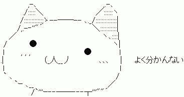
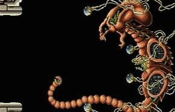
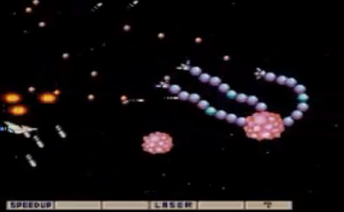
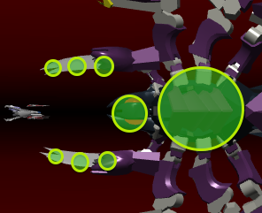
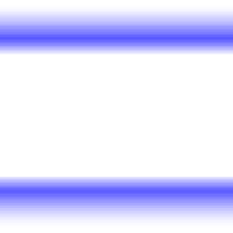

自己紹介
名前
楢崎大志
daishi.hmr@gmail.com
daishi_hmr
GitHub
daishihmr
所属
（株）エイプルジャパン
経営企画室・新規事業開発室
narazaki.daishi@apl.co.jp
ふだんの仕事
いわゆる普通のSIer
企業・大学向けシステム開発
主な使用言語は 

今日のテーマ
ブレイブーストの作り方
なんだそれ？
- 今年8月に9leapに投稿したシューティングゲーム
- YouTube:
http://youtu.be/Mxn-021Kwls - gl.enchant.jsを本格的に使ってる
- 伝統的な横シュー（非弾幕, 振り向き不可）
- 開発におよそ3ヶ月かかった
- 難易度が理不尽に高い
- 妙に高い評価を頂いている
最高峰！？

...そんな
ブレイブーストの作り方
をご紹介
chapter1. 素材の話
モデルデータどうするよ？
モデルデータがない
- 3Dでゲームを作るからにはオリジナルのキャラクターを出したい
- 2D素材とちがい、公式パッケージにはドロイドくんしか入ってない
- プリミティブだけで作るのはあまりにも...つらい
- メタセコで作ってMMD? そんな技術ネーヨ
- Blender? Maya?
- 
簡単に大量のモデルデータを
確保したい！
超カンタンな
モデリングツールはないのか？
あった！
DOGA-Lシリーズ
なんじゃそれ？
- 20年ぐらい前からある3DCG入門者向けモデリングツール
- 学習用途向けだから簡単
- 用意されているパーツを組み合わせるだけでモデルが出来ちゃう
- 意外とハイレベルなことも...?
これを使おう！
でも、一般的な形式で出力できないよ...?
だったら変換エンジンを
自作しよう！
作りました！
DOGA-L3の
L3P/L3Cファイルを
JSONに変換するサービス
サービス名「DoGencha」
「名前なんてどげんちゃよかたい」の意
ちょっとデモ
DoGencha導入のメリットとデメリット
- 極めて手軽に3Dモデルを作成／入手できる
- データのライセンスが非コピーレフトになってしまう
(非商用利用に限定されてしまう)
「ブレイブースト」では...
ゲーム中に登場する自機・すべての敵キャラ・一部の弾で使用
モデルデータのみライセンス形態を別に
chapter2. 当たり判定の話
突然ですが
「触手」は
お好きですか？
シューティングゲームにおける「触手」
古くからシューティングゲームの敵キャラとして登場
R-TYPE「ドプケラドプス」
ダライアス外伝「ネオンライト・イリュージョン」
グラディウス「5面 触手ステージ」
XEXEX「フリント」
多関節！
- 単独で存在していたスプライト同士に「親子関係」を持たせて「多関節」を実現することができる
- 関節をたくさん使用することで、容易に生物らしい演出が可能
@usami_yuさんの「すねーくん」
gl.enchant.jsで多関節を実現するには
var body = new Sprite3D(); var arm = new Sprite3D(); body.addChild(arm);
glでは2DにおけるGroupにあたるものがない。
代わりにSprite3Dに他のSprite3Dを子ノードとして追加できる。
DoGenchaでのDOGA-L3多関節物体(L3C)の実現にはこれをそのまま利用している。
gl.enchant.jsでの
多関節物体表現は
意外と簡単！
しかし！
衝突判定に難あり！
glにおけるintersectメソッドはthis.x, this.y, this.zしか見ていない
子ノードのthis.x, this.y, this.zは親ノードからの相対位置
⇒ 正しく衝突判定ができない！
正しく衝突判定を行うには
- 親ノードをたどって絶対位置を計算する必要がある
- いっそ腕や脚は無視して、本体だけに当たり判定があるようにするという手もあり...?
「ブレイブースト」では...
１ボスには胸部分にしか当たり判定がない
３ボスはポーズ変更が完了した時点で位置固定の当たり判定を生成している

chapter3. アルファブレンディングの話
アルファブレンディング！
アルファブレンディング！
アルファブレンディング！
アルファブレンディング！
アルファブレンディングが大好きだ
gl.enchant.jsでビームをカッコ良く表示してみよう！
// 少しずつずらしながら5枚ほど重ねる
for (var i = 0; i < 5; i++) {
// 常にカメラの方を向く板ポリゴン
var beam = new Billboard();
beam.y = Math.random() * 0.1;
var beam.mesh.texture.src = game.assets["beam.png"]; // ビーム画像を貼る
scene.addChild(beam);
}
↓こういうテクスチャを貼る

あれ～？
gl.enchant.jsのデフォルト設定ではアルファブレンディングが有効になっていない
_renderメソッドをオーバーライドしてブレンディングに関する設定を行う必要がある
beam._render = function() {
// ブレンディングするぞ！
gl.enable(gl.BLEND);
gl.blendEquation(gl.FUNC_ADD);
gl.blendFunc(gl.SRC_ALPHA, gl.ONE);
// 本来の_renderメソッドを呼び出すぞ！
Sprite3D.prototype._render.apply(this);
// ブレンディングをやめるぞ！
gl.disable(gl.BLEND);
};
うんうん、だいぶよくなった
でもまだすこし変
透明度が断続的になってる
デフォルトのFシェーダーはアルファ値0.2未満を無視する
gl.enchant.js v0.3.6 3041行目
vec4 baseColor = vColor;
baseColor *= texColor * uUseTexture + vec4(1.0, 1.0, 1.0, 1.0) * (1.0 - uUseTexture);
float alpha = baseColor.a * uDetectColor.a * uDetectTouch + baseColor.a * (1.0 - uDetectTouch);
if (alpha < 0.2) {
discard; // ← ここ
}
else {
vec4 amb = uAmbient * vec4(uAmbientLightColor, 1.0);
カスタムシェーダーを使おう
シェーダーファイルをpreloadで読み込んで...
game = new Game();
game.preload("standard.vs", "effect.fs");
Shaderを作って...
var customShader = new Shader(game.assets["standard.vs"], game.assets["effect.fs"]);
Sprite3Dのprogramプロパティにセットする
beam.program = customShader;
他にもいろいろゴニョゴニョする
// _render内で足りないUniform変数をセットしてやる this.program.setUniforms(this.scene.getUniforms());
chapter 4. その他表現の話
appendix. 参考にさせていただいたサイト
wgld.org - WebGL Developer org
WebGLが基礎から学べるサイト。
解説がむちゃくちゃ丁寧でわかりやすい。
シェーダとかクォータニオンはここで勉強した。
床井研究室
http://marina.sys.wakayama-u.ac.jp/~tokoi/
和歌山大学の先生が日々を綴っている。
過去ログからOpenGLに関する膨大な知識が得られる。
IMYGraphics
http://andorelseif.com/IMYGraphics/Wiki/doku.php
フォグのかけ方はここからパクった。
WebGL Reference Card
http://www.khronos.org/files/webgl/webgl-reference-card-1_0.pdf
WebGLの規格を管理しているKhronos Groupによる、WebGLのリファレンスカード。
チートシートとして。